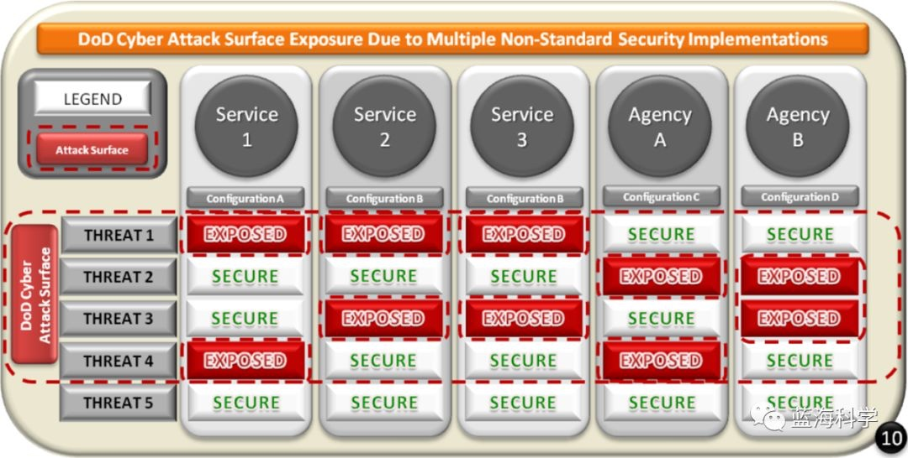
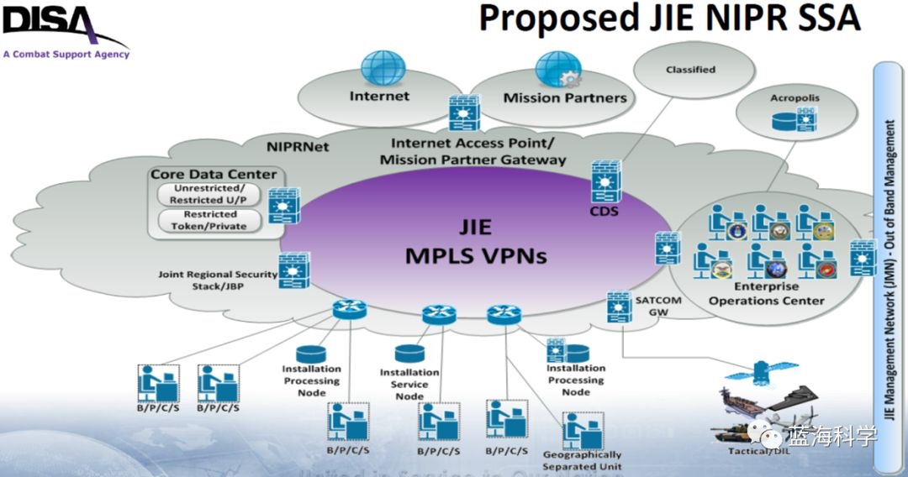
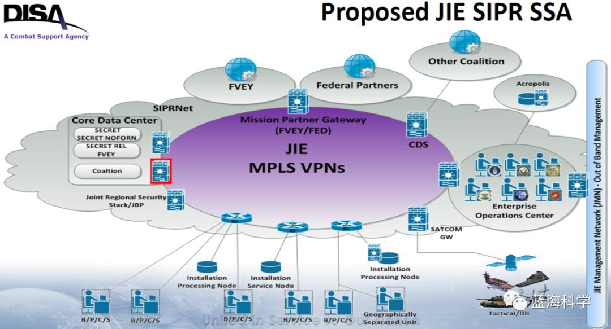
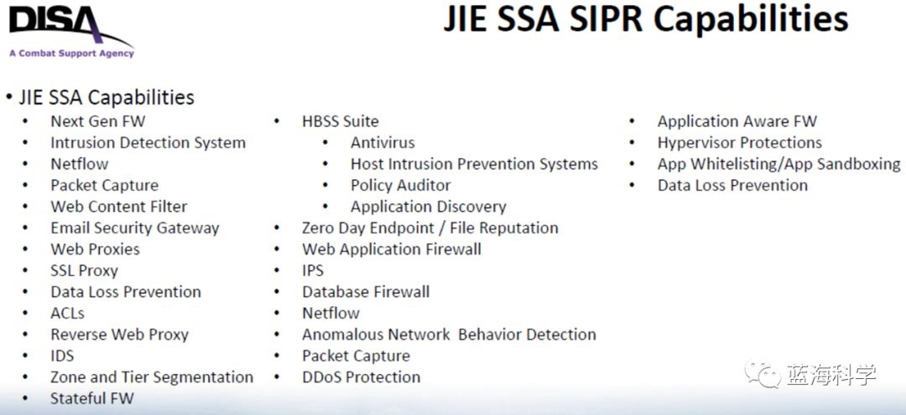

【转】美军网络安全 | 第 2 篇：JIE 网络安全架构 SSA（单一安全架构）
原文：https://mp.weixin.qq.com/s/GVcNs7avdB5hEk-ZI7Aq2Q
Table of Contents
一、上期回顾
公众号的上一篇（美军网络安全 | 开篇：JIE（联合信息环境）概述）介绍了美军 JIE （联合信息环境）的总体情况。其主要目标是实现“三个任意”的愿景——美军作战人员能够基于任意设备、在任意时间、在全球范围的任意地方获取所需信息，以满足联合作战的需求。
同时，提到了 JIE 为国防部构建的 6 项关键能力： SSA （单一安全架构）、网络规范化、 IAM （身份与访问管理）、企业服务、云计算、数据中心整合。还提到了 JIE 的 8 个现代化领域：网络现代化、网络安全体系结构、企业运营、计算与存储、企业服务、任务伙伴环境（MPE）、身份和访问管理（IdAM）、移动性。
这一篇，就谈 6 项关键能力的第 1 项和 8 个现代化领域的第 2 项 —— JIE 网络安全架构 SSA （单一安全架构）。
注意：SSA（单一安全架构） 在最新的文件中可能被称为 CCA （一致网络安全架构）。
二、国防部网络安全准则
根据美国防部 2016 年发布的《国防部网络安全准则实施计划》列出了朴实得不能再朴实的基本安全准则：
- 努力方向 1 ：强身份验证：降低对手在国防部信息网络上的机动能力。美国防部将执行更为严格的访问要求并降低网络的匿名性。
- 努力方向 2 ：设备加固：减少进入国防部信息网络的内部和外部攻击向量。确保设备正确配置和软件补丁为最新,该项工作还包括禁用电子邮件中的活动链接。
- 努力方向 3 ：减少攻击面：减少进入国防部信息网络的外部攻击载体。指挥官和监察人员必须确保只有经过授权的设备可以访问网络、与国防部网络建立信任。此外,减少被攻击面也是 JIE （联合信息环境）的目标之一。 JIE 使用联合区域安全堆栈（JRSS）减少安全区域的数量，从 1000 多个网络访同点减少到 50 个。
- 努力方向 4：与网络安全/计算机网络防御服务提供商保持一致：提高对敌方活动的探测和响应能力。监控网络外围，推动网络事件报告方式的标准化，将提高对网络事件的快速检测和快速反应。
从第 3 个努力方向可以看出：减少攻击面是其关键原则之一。而 SSA 正是贯彻这一安全原则的产物。
三、设计SSA的背景原因
美国防部设计 SSA 的根本原因是 GIG 存在问题。
- GIG 初衷：
GIG 是美军在提出 JIE 之前构建实施的巨大而复杂的通信与服务系统，其网络基础结构由不同的分布式服务单元组成，旨在将美国国防部的所有的信息系统、服务及应用，集成为一个无缝隙的、可靠的和安全的网络。
- GIG 结果：
但是随着 GIG 演进工作的不断推进，原有的设计逐步暴露出构建成本高昂、互联能力有限、新技术采用缓慢、事件响应灵活性差等问题，美军构想的信息共享、基础设施建设、系统和服务采办模式、联合训练、通信保障及作战支持等能力并未达到预期目标。
- GIG 问题披露：
2012 年，美国网络司令部司令兼国家安全局局长，亚历山大将军，接受联邦新闻电台采访时说：“对于现在的 DoD 体系结构，我认为保护它们真的是非常困难。我们有 15000 个飞地，每个都是单独管理的。其结果是，每一个都要被修补，像一个独立的采邑一样运行。负责保护它们的人看不到防火墙以外的东西。基于主机的安全系统有所帮助，但实事求是的讲，态势感知是不存在的。”
2014 年，美军在《陆军网络安全企业参考架构 2.0》中提出，当前网络安全防护手段存在以下缺点：
- 各军兵种的网络包含重复、冗余的网络安全控制手段，同一数据在到达接收方路径中会被检查多次，造成效率低下、时延增加；
- 美海军提出的 CND 2.0（计算机网络防御体系）在实践中被认为没有达到预期效果，功能不完备；
- 安全策略的非标准化情况严重，有时甚至造成冲突，导致安全能力降级；
- 当前的网络攻击暴露面是无法管理的；
- 许多 P/C/S （美军不同级别的前线阵地）用户需要同时维护不同网络的多种边界安全防护设备；
- 缺乏面向最终用户和设备的态势感知和事件响应能力。
- 原因分析：
在 GIG 所代表的传统信息框架下，各军种具备自行设计网络、开展网络防御的决定权。
尽管美军国防部在各军种、军事机构中推动和实施了多个网络安全战略性项目，但 GIG 各组成单元间相互脱节的网络安全策略和保护措施多样化的实现途径，导致网络安全本质上的整体保障能力存在巨大风险。
四、SSA 的背后思想
SSA 的设计思想是减少网络攻击面暴露。

由于多种非标准化安全实现带来大量的 DoD 网络攻击面暴露，所以 SSA 的基本思想是标准化安全实现，以减小网络攻击面。从 SSA 的名称“单一安全体系结构”也可以领会到这一点。
五、SSA 定义&定位
- SSA 定义：
JIE SSA 是一个联合的国防部安全架构，为美军国防部所有军事机构的计算机和网络防御，提供通用方法：
- 使用标准化的安全防护功能集/套件，在最佳位置开展防御；
- 移除冗余的不必要的信息保障手段，以提高效能；
- 通过集中式计算机网络防御数据库，控制用户数据流动，并向 B/P/C/S 提供全局态势感知；
- 在服务器、用户资产与骨干网分离时，保护网络飞地；
- 在 JIE 指定的美军国防部 EOC （企业操作中心）中，提供用于监视和控制所有安全手段的工具集。
- SSA 定位：
SSA 的提出体现了美军为扭转安全防护的不利态势，而在 JIE 中做出的不懈努力。
SSA 在 JIE 中定位：SSA 对应于 JIE 关键目标中的“建立整体的企业化安全架构，以确保优化的和同步化的网络、项目和企业化服务、以及联合和联盟作战行动”这一要求。
SSA 与 JRSS 关系： JRSS 是 SSA 的重要组成部分和贯彻实施形式。
SSA 的主要原理：降低所需的信息技术设备总量、实现配置标准化，建立企业级的安全共享协议和简化数据路由等。
- SSA 目的：
SSA 目的：打破军兵种间分割和安全防御的各自为战，整合成一个安全集成框架；
- 将最佳的 CC/S/A（作战司令部/军种/机构）的信息保障能力和实践，应用于JIE安全体系结构。
- 用户在 SSA 支撑下，能够连接以前从未访问过的外部网络，从而获得更灵活的战术优势。
- SSA 通过规整网络安全边界，减少外部攻击面、管理标准化和操作、技术控制，确保在所有任务背景下美军国防部信息资产的保密性、完整性、可用性，同时能够促进快速攻击侦察、诊断、控制、响应能力的实现。
- 试图解决在实施任务保障时存在的机构重叠、职责不清等问题，消除系统烟囱和网络安全边界，减少暴露于外部的攻击面，实现参战单元的信息互通及快速、安全的数据共享，推进安全机制和协议规范的复用，降低已有系统改造和集成的耗费，从而使得信息基础设施管理员们更方便地监控和发现潜在安全威胁，并更迅速地应对。
五、SSA方案和能力分解
- SSA 方案
美国防部网络区分为 NIPRNet（非密网）和 SIPRNet（涉密网），对应的 SSA 方案有所不同。
NIPRNet 的 SSA 方案如下图：

SIPRNet 的 SSA 方案如下图：

留个作业：请自行对比上面两张图的区别。
看到这两张图，应该会很自然地联想到上一篇的 JIE 整体框架图：

现在，兑现上期的承诺：给出JIE整体框架的汉化版：

实际上，图中所有深红色标记的安全能力都属于SSA的覆盖范畴，当然标记为SSA和JRSS的那些模块最为直接。
- SSA 能力分解
对应地，两种网络中 SSA 的能力也有所不同。
NIPRNet 的 SSA 能力如下图：

SIPRNet 的 SSA 能力如下图：

可以看出， SSA 覆盖的安全能力包括：国防部企业边界保护、端点安全、移动端点安全、数据中心安全、网络安全态势感知分析能力、身份和访问管理。可谓面面俱到。
六、总结和预告
这一篇主要介绍了美 JIE 环境的整体安全架构思想 SSA 。
关注于落地实现细节的童鞋，可能会有很多疑问。
是的。SSA 更多的是一种安全思想，而其落地实现则会分解到更多的安全能力模块中，比如JRSS（联合区域安全栈）就是SSA的核心实现之一。
若想进一步了解SSA实现细节，且等下回分解。
注意是“且等”，感兴趣却没有耐心的童鞋，还请自行分析研究，欢迎交流沟通。
sbilly
主要关注 信息安全、网络安全、系统架构、计算机、网络、开发、科技、制造等科技领域